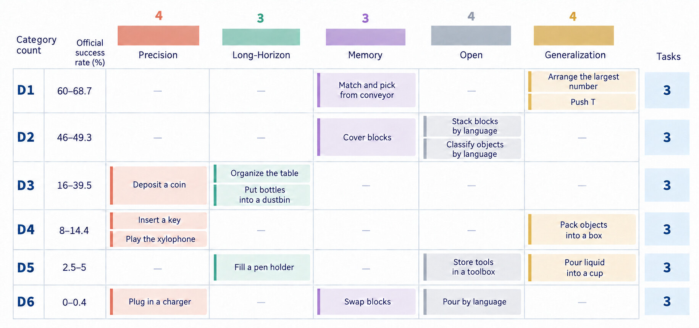
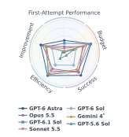
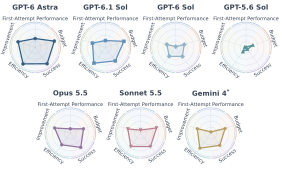
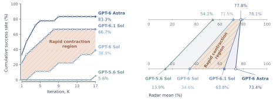
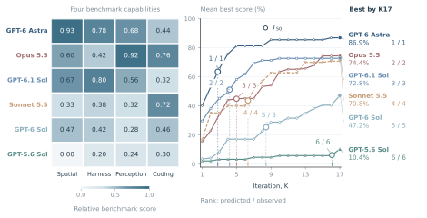
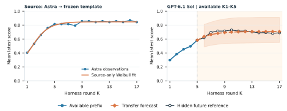
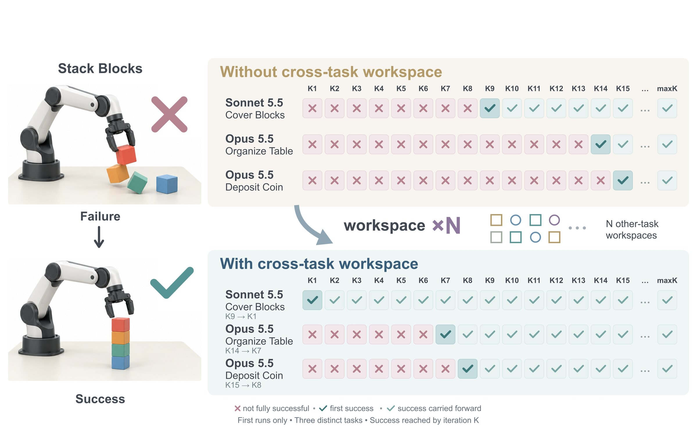

PhysRSI-Eval · Paper in preparation
Where is Physical RSI capability from?An Observational Scaling Law of LLM-as-policy
We systematically investigate the mechanisms, scaling behavior and generalization of physical recursive self-improvement (RSI). PhysRSI-eval quantifies it through a five-axis metric — First-Attempt Performance, Efficiency, Success, Budget and Improvement from failure — with different VLMs evaluated on 18 manipulation tasks under a fixed interaction budget.
PhysRSI-eval at a glance
Three questions about physical RSI

The analysis of experimental results motivates the Physical Barrel Hypothesis: different capabilities may constrain different parts of improvement.
Systems with similar public benchmark averages can still differ widely on the five axes. We predict the relative performance of VLM agents from their public capabilities, and forecast later progress from early physical feedback.
Removing history reduces late-round success, frozen workspaces remain useful on unseen layouts, and three cross-task cases achieve success earlier. Scene-specific adaptation and reusable experience can coexist.
Benchmark design
PhysRSI-eval: a controlled loop of physical attempts
PhysRSI-eval makes the three questions measurable by recording both physical attempts and the workspace carried between them. Model weights stay fixed, while skills, tools, policy code and memory can change in a persistent workspace. Each revision is tested through a judged physical attempt, which connects workspace changes to an observed outcome and a physical cost.
Measures the starting point without a persistent workspace. Each task runs three times through the shared robot tools, and its scores are averaged.
The agent starts from a Harness workspace that is empty except for the host's read-only tools. Each round executes one physical attempt and returns the native score, success flag and failure reason; the agent then revises its workspace with robot actions disabled and commits it. At most H = 17 rounds, stopping at the first native success.

Tasks across difficulty levels
The 18 RoboDojo tasks cover language-conditioned arrangement, stacking, container placement, insertion, pouring, pushing and dynamic picking. They span RoboDojo's five official task categories (Precision, Long-Horizon, Memory, Open and Generalization) and sample three tasks from each of six difficulty strata, assigned from the official RoboDojo success rates: from D1 (60–68.7%) to D6 (0–0.4%). Each task retains its native score in [0, 1], success criterion and step limit.

Systems: GPT-6 Astra, GPT-6.1 Sol, GPT-6 Sol, GPT-5.6 Sol, Claude Opus 5.5 and Claude Sonnet 5.5, each a model with its runtime configuration. Gemini 4 is reported in a separate partial run covering ten tasks through K20, with six solved; it is excluded from the benchmark-based association and prediction analyses.
A five-axis profile of improvement
An endpoint score alone cannot quantify physical RSI. The five-axis profile separates the starting point from gain timing, attained score, physical budget savings and recovery from failure.
| Axis | Question | Definition |
|---|---|---|
| A1 First-Attempt Performance | How well does the agent perform on its first attempt? | Mean K0 score, averaged over three runs per task and then across tasks, including partial progress. |
| A2 Efficiency | How early do gains appear? | Mean gain over K1–K(H−1) relative to the terminal net gain over K0; earlier sustained gains give higher values. |
| A3 Success | What score does the agent attain? | Mean score over the high window, from τ90 (first round reaching 90% of the peak gain) to KH, with partial credit. |
| A4 Budget | How much physical budget is saved? | On solved tasks, one minus the charged physical steps through first success as a fraction of the budget; higher saves more. |
| A5 Improvement | Which early failures are overcome? | Fraction of K1-failed tasks subsequently solved within the budget. |
Q1
Where is Physical RSI capability from?
What allows physical feedback to become a useful policy revision? Acting, interpreting an outcome and implementing a change may draw on different capabilities. We use the five-axis profile to ask whether the capabilities associated with a strong first attempt also track effective improvement.
Which capabilities track physical RSI?
Strong coding scores alone do not ensure physical improvement. GPT-5.6 Sol exceeds GPT-6 Astra on LiveBench code generation and completion, yet solves one of the 18 tasks, whereas Astra solves 15. We group 17 public benchmark scores into Spatial, Harness, Perception and Coding, then compare their ranks with A1–A5 across six systems on all 18 tasks.
Spatial reasoning has the strongest observed association with A1 (ρ = 0.94) and A2/A4 (ρ = 0.83). Perception has the strongest association with A3 and A5 (ρ = 0.94). Coding has the weakest association with every axis (ρ ≤ 0.37).
The Physical Barrel Hypothesis

These associations identify candidate bottlenecks that targeted capability interventions can test directly.
Q2
How can we quantify Physical RSI and its scaling law?
How much can an agent improve, when do its main gains occur, and how much interaction does it need? We first quantify differences among agents, then study how these outcomes scale with model capabilities and physical interaction budget.
High scores, fast gains and low cost can diverge
Opus has a higher Success score than GPT-6.1 Sol (0.744 versus 0.703), but lower Efficiency (0.609 versus 0.822). On each system's solved tasks, Opus saves less of the budget (0.579 versus 0.808), and the gap persists on the ten tasks both systems solve. Higher attained scores can come with later gains and greater physical costs.
Across the six systems, task-mean scores rise from 0.01–0.37 at K0 to 0.10–0.84 by the end of evaluation. They solve 15, 12, 7, 1, 13 and 11 of 18 tasks, respectively: Astra, GPT-6.1 Sol, GPT-6 Sol, GPT-5.6 Sol, Opus and Sonnet. Astra leads on all five axes. The profile exposes these trade-offs without a single ranking.
| System | Tasks | A1 | A2 | A3 | A4 | A5 |
|---|---|---|---|---|---|---|
| GPT-6 Astra | 18 | 0.3676 | 0.8594 | 0.8509 | 0.8429 | 0.7500 |
| GPT-6.1 Sol | 18 | 0.2843 | 0.8224 | 0.7028 | 0.8081 | 0.5714 |
| GPT-6 Sol | 18 | 0.0306 | 0.4658 | 0.4722 | 0.3718 | 0.3889 |
| GPT-5.6 Sol | 18 | 0.0120 | 0.2247 | 0.1037 | 0.3013 | 0.0556 |
| Claude Opus 5.5 | 18 | 0.1769 | 0.6091 | 0.7444 | 0.5794 | 0.6875 |
| Claude Sonnet 5.5 | 18 | 0.1241 | 0.6946 | 0.7006 | 0.6984 | 0.5625 |
| Gemini 4* | 10 | 0.0500 | 0.7831 | 0.6350 | 0.6241 | 0.6000 |
Five-axis profiles. K0 scores are averaged over three runs per task. A1–A5 denote First-Attempt Performance, Efficiency, Success, Budget and Improvement. *Gemini 4 is evaluated on ten tasks with one K0 run per task.


How much do public benchmark averages reveal about these differences? Across the four GPT systems, mean scores over 17 public benchmarks span 54.1–78.1, while the equally weighted physical profile mean spans 13.9–73.4. The ranges are 24 and 59.5 points on different scales. GPT-5.6 Sol stays near zero cumulative success for 16 rounds: more attempts do not close every capability gap within this budget. Useful improvement may require a minimum level of a needed capability, even when other capabilities are strong.

Observational scaling across model capabilities
Can public capability scores anticipate physical improvement before the full evaluation is run? Ranking systems by the equal-weight average of their four capability profiles reproduces the observed order of the best score reached by K17. For gain timing, we define the half-gain round T50; for every pair of systems, a kernel regressor fitted on the capability profiles of the remaining systems predicts which of the two reaches T50 first, and all pairwise orderings are recovered.

What can early physical feedback predict?
A related model may share the shape of its improvement curve. We fit a Weibull growth template to Astra's K1–K17 mean score and calibrate its start, plateau and relative speed on GPT-6.1 Sol's first rounds only. With K1–K5 observed, the transferred curve forecasts the remaining rounds through K17 with mean absolute error 0.019, compared with 0.112 for holding the last observed score.

Q3
Does Physical RSI reflect overfitting or generalization?
With fixed model weights, generalization concerns the code, tools and notes the agent retains. We first test whether retained experience helps beyond repeated attempts. We then evaluate frozen workspaces on unseen layouts and transfer them to new tasks.

Does retained experience help beyond repeated attempts?
The Astra ablation varies which information from earlier rounds reaches the agent: the workspace, grader feedback, images and action records. It covers six tasks with two chains each; layouts change every round over K1–K6. Withholding grader feedback causes the largest drop, to 5/36 (13.9%); keeping only the workspace and grader feedback yields 17/36 (47.2%).
late-round success over K4–K6 (15/36 vs. 3/36)
workspace files alone, with no further revision or outcome feedback
What survives when revision stops?
We freeze Astra workspaces after K6 and test each on five unseen layouts. Across 12 sources, workspace files alone succeed in 25/60 tests (41.7%); adding prior raw records gives 23/60 (38.3%). Fixed-layout source workspaces reach 27/60 (45.0%) on held-out layouts, compared with the reported 14/16 (88%) on their own layout. Scene-specific gains and transferable experience can coexist.
Can experience help on a different task?
Traces from five models suggest two forms of reusable experience: executable routines and textual operating knowledge. Sonnet 5.5 and Opus 5.5 increasingly encode control in self-written tools, which generate over 96% of their actions in later rounds. Among the three models with substantial tool libraries, Opus exhibits broader reuse and lower concentration: its lineage reuse rate is 0.347, compared with 0.167 for Sonnet and 0.086 for GPT-6 Sol.

Astra and GPT-6.1 Sol follow a different pattern: about 99% of their actions remain directly generated by the model, but their reasoning time decreases across rounds as memory, skills and policy notes are reused. During cross-task transfer, agents also consult memory and skills from semantically similar tasks. Semantic similarity helps identify candidate experience; failure evidence guides whether to reuse, adapt or discard it.
Citation
BibTeX will be available when the paper is released.